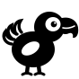

A small e-ink pet that keeps your memory: press its button and it records your voice notes and conversations, always showing when it listens.
Un petit compagnon à encre électronique qui garde ta mémoire : appuie sur son bouton et il enregistre tes notes vocales et conversations, en montrant toujours quand il écoute.
Dodo Listener connects to your Dodo over Bluetooth, downloads its recordings on your Wi-Fi, and makes transcripts, translations and a daily recap.
Dodo Listener se connecte à ton Dodo en Bluetooth, récupère ses enregistrements sur ton Wi-Fi, et fait transcriptions, traductions et un résumé quotidien.
Open Dodo ListenerOuvrir Dodo ListenerNothing happens? The app is not on this iPhone yet: it is in private testing (not on the App Store yet). Ask D-CREATIONS for an invitation.
Rien ne se passe ? L'app n'est pas encore sur cet iPhone : elle est en test privé (pas encore sur l'App Store). Demande une invitation à D-CREATIONS.
No app needed: Chrome talks to Dodo directly. Keep Dodo close and awake, then tap Connect and pick “The Elements”.
Pas besoin d'app : Chrome parle directement à Dodo. Garde Dodo près de toi et allumé, puis touche Connecter et choisis « The Elements ».
These are the networks Dodo can see. Tap yours and type its password. Dodo keeps up to 10 and joins the strongest one, so it stays online without your phone.
Voici les réseaux que Dodo voit. Touche le tien et tape son mot de passe. Dodo en garde jusqu'à 10 et rejoint le plus fort, pour rester en ligne sans ton téléphone.
Dodo records only when you press its button, and shows it on its screen. Recording someone's private words without their consent is a crime in France (Code pénal, art. 226-1): tell people when Dodo is listening.
Dodo n'enregistre que quand tu appuies sur son bouton, et l'affiche à l'écran. Enregistrer les paroles privées de quelqu'un sans son consentement est un délit en France (Code pénal, art. 226-1) : préviens les personnes quand Dodo écoute.